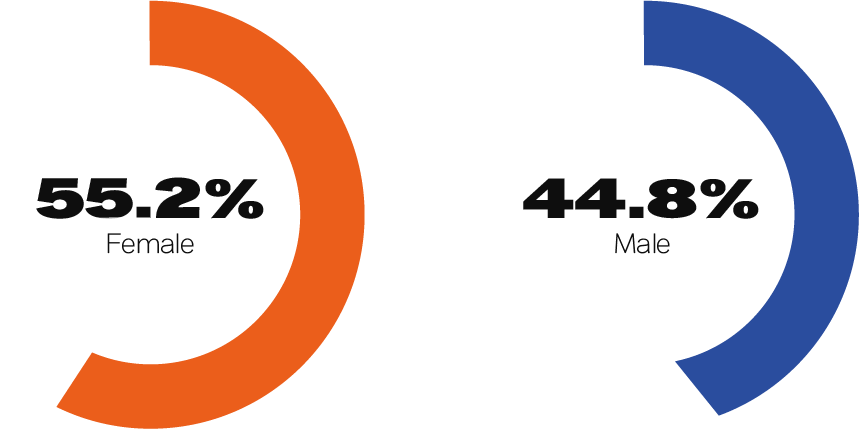
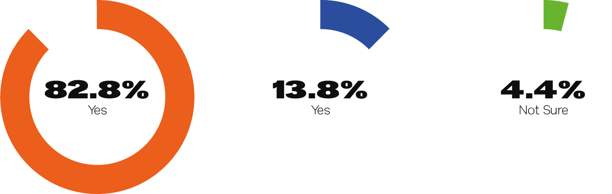

Final Year Project for Dundalk Institute of Technolgy
Exhibited at FÍS19 Graduate Show
BLNKDISRUPTION is a project which aims to investigate the evolution of creative media, what it is in its traditional form and what is can develop into with the assistance of modern technologies.
The core of the project is to explore the progression of creative media from traditional to contemporary. The project also examines the potential reaction this could have on an audience.
BLNKDISRUPTION encourages everyone to experience the progression between the two mediums. The first step is to access the Snapchat app. Next you must hover you camera over our Lens Code to unlock our unique lens. Now you’re ready to bring our elephant to life!
Our ambition was to produce a powerful and inspirational project that will create an enlightening user experience through the use of a Snapchat Lens, we have enabled a piece of traditional creative media to come to life. This process showcases the progression of to traditional to contemporary creative media and highlights the potential of techonlogy on traditional media.
Can't make it to the Exhibition? Try out the AR experience from the comfort of your home by scanning this image using Our Lens via Snapchat
As part of our research question, we wanted to analyse people’s reactions to using traditional vs using contemporary creative media. In order to obtain these results, we used both quantitative and qualitative research methods.
For the first part of our project we conducted a survey with the participants for our traditional painting experience. Overall, we had 29 participants in the study. There were 55.2% majority of females and 44.8% of males involved. As the study was undertaken with undergrad students in the college, 96.6% of the participants were aged between 18-30 and 3.4% 30-40.
In our research we discovered that art therapy and community- based art can be interlinked so we wanted to investigate if the participants felt relaxed while painting. 72.4% said yes, 17.2% said they were unsure and 10.3% said no.
In the focus group, participant A said they really enjoyed the experience she can’t remember the last time they had painted. Participant B said they found the experience very therapeutic. Participant A stated that the second art piece brought the project into the modern world. They stated that everything is either snapchat or Instagram, basically everything has a filter. They said they like the artistic ability of the first piece but said by turning it into a digital piece it brings your imagination into reality.
From the results of both the survey and the focus group, the researchers analyzed whether the interaction with the participants and their reaction to the project was successful or not.
Firstly, the participants who were involved in the painting workshop day had an overall positive reaction to creating the artwork together. Overall, they enjoyed the experience of using the paint as one participant stated “haven’t painted in years, and it was great fun”. This positive result can reflect the researchers initial research into community-based art and how it can have a positive affect on people.
In our research we discovered that art therapy and community- based art can be interlinked so we wanted to investigate if the participants felt relaxed while painting. 72.4% said yes, 17.2% said they were unsure and 10.3% said no.
In regard to the focus group, once again the researchers received positive feedback from the participants. The main aim of the focus group was to investigate whether or not the they liked the contemporary piece.
From the results it can be stated that the participants liked the traditional artwork but by bringing it into the modern world it brings the art from imagination to reality.
Overall, the results were expected from the two studies, the researchers did not expect the project to be a life-changing experience for the participants but they glad there was a positive affirmation for the project.
#ALLUPINYOURSPACE
A Mini Montage by BLNKDISRUPTION
Director: Dearbhla Brodigan
Editor: Dearbhla Brodigan, Faye Flynn
Sound: Faye Flynn
Camera: Dearbhla Brodigan, Mary McKeever
Video Duration
2 Minutes
Share this Video
One of the main deliverables of this project is a mini documentary documenting our process and our findings throughout the duration of the project.
This video includes a mini montage of the work the researchers did in order to prepare for the traditional painting day. This included painting the boards white, projecting the design onto the boards, sketching the design and redoing it with black marker. The montage video also shows a snippet of the traditional painting day and the long process it took in order to complete the design. The last part of the montage is showing the participants who painted on the first day the finished contemporary piece. The researchers had a lot of fun making the project and the montage hopefully reflects this.
We always wanted our process to be as transparent as possible. We want you; yes, you! To get involved! View our posts on Instagram, personally curated by members of our team.
Use our Hashtag #ALLUPINYOURSPACE to get your post featured in our Instagram page!
Dearbhla Brodigan
Project Manager & Videographer
Portfolio
Portfolio LinkBLNKDISRUPTION is our final year project which will be showcased at FÍS19 Graduate Show.
We would like to thank everyone who has helped and participated in our workshops.
Lastly, we would also like to thank our supervisor Fiachra O’Cuinneagain for helping and guiding us throughout the duration of the project.
#weareallartists
{kind=link}